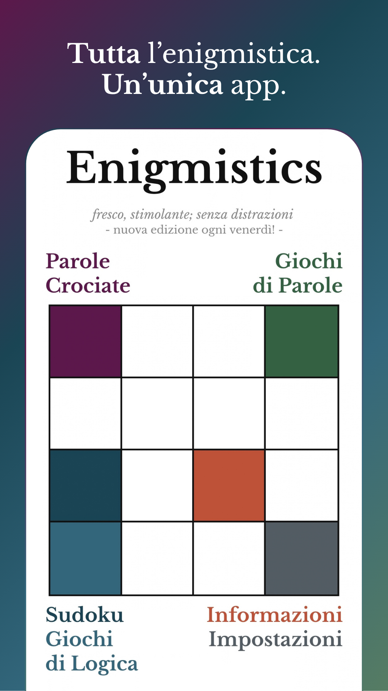
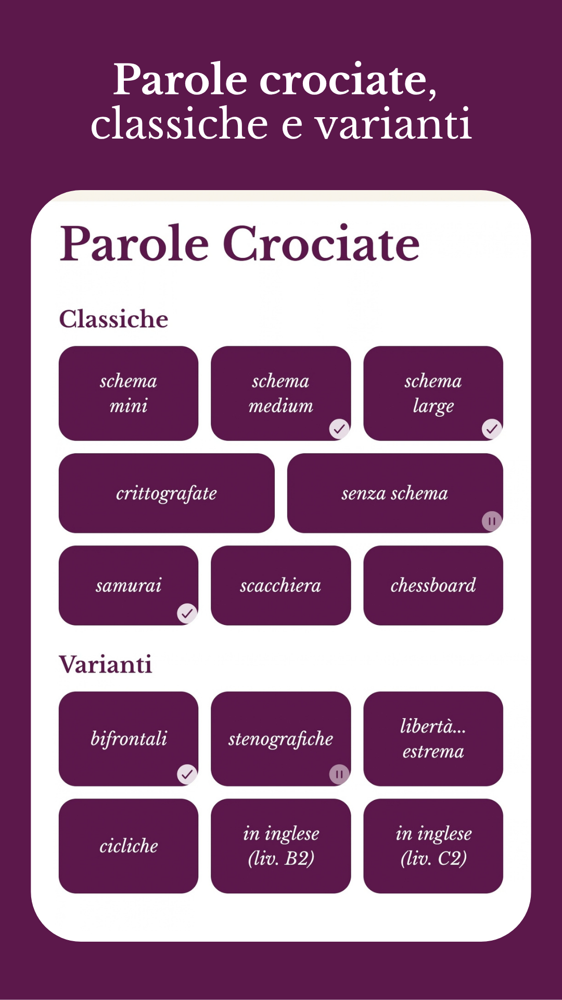
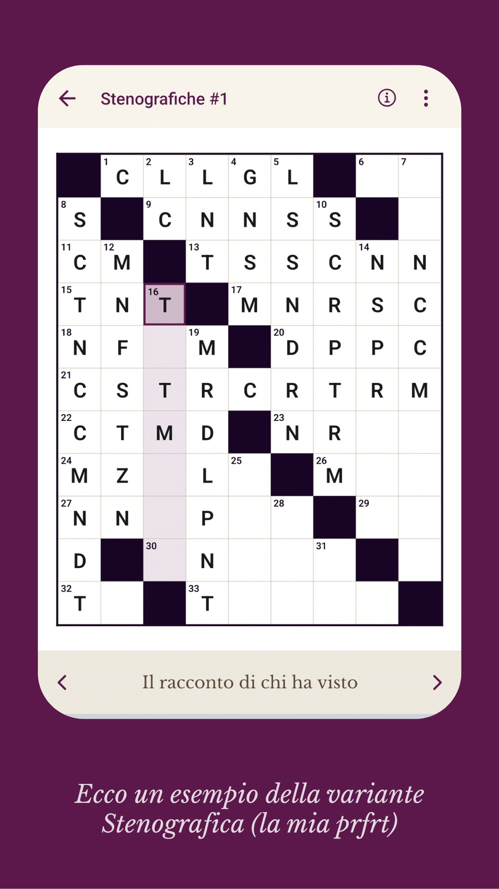
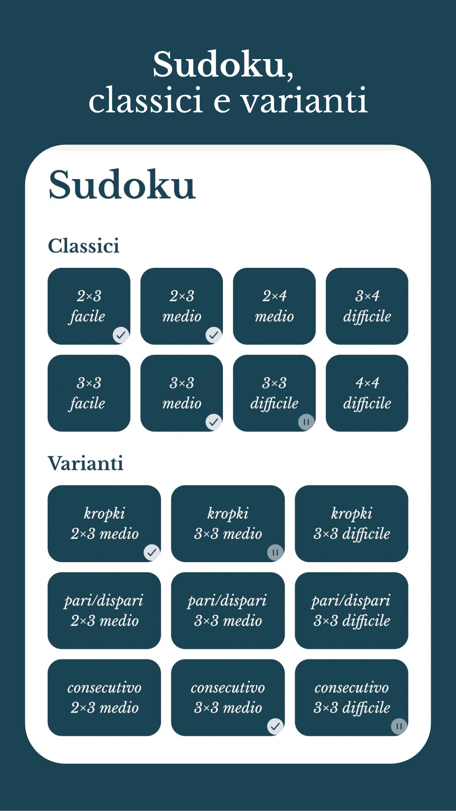
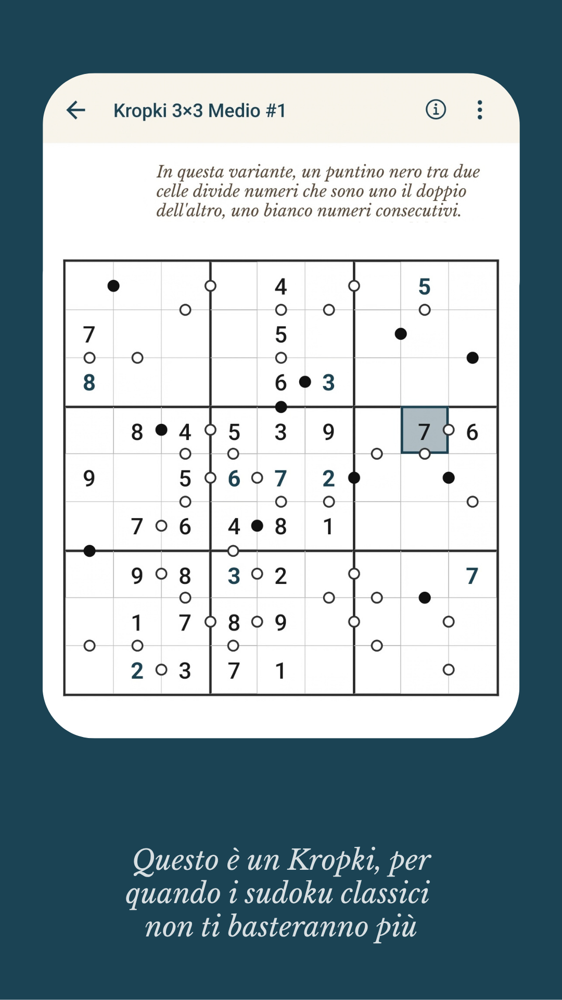
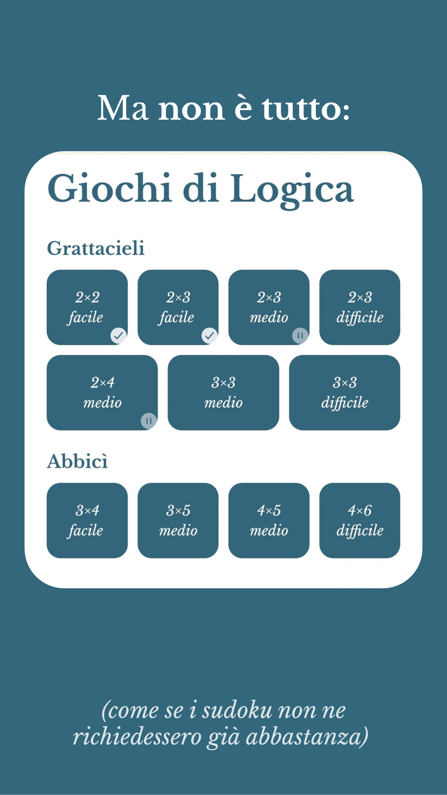
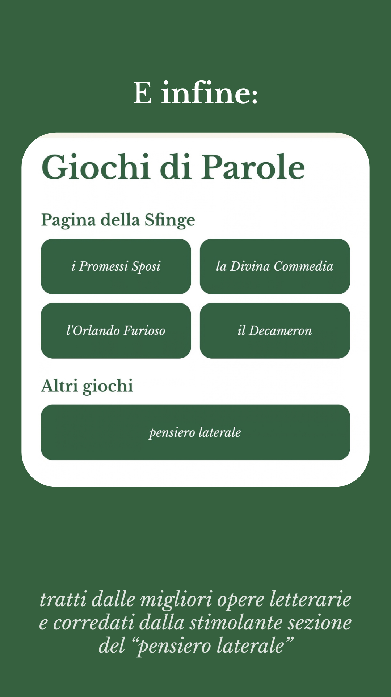
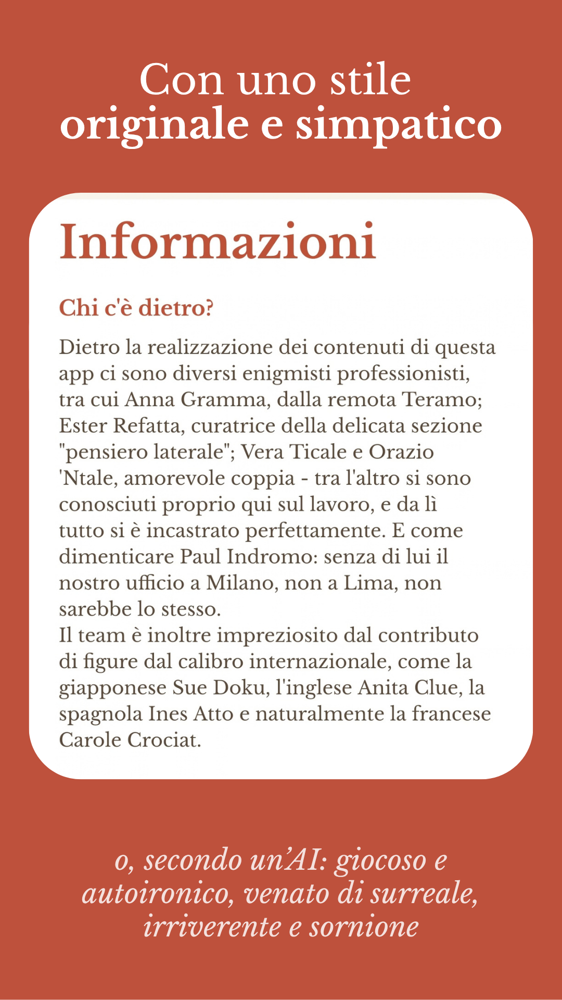

Enigmistics
Giochi enigmistici tradizionali e puzzle logici, arricchiti da varianti per mettere alla prova i tuoi neuroni. Nuova edizione ogni venerdì.
Parole crociate
Classiche di varie dimensioni, crittografate, senza schema, e infine varianti bifrontali, stenografiche, cicliche e a variazione d'estremi
Sudoku
Classici, ma non troppo, con infatti dimensioni 2x3 e 3x3 ma anche 2x4, 3x4 e 4x4, insieme a varianti kropki, pari/dispari e consecutivo
Giochi di logica
Grattacieli, un ulteriore variante del gioco del sudoku, e Abbicì, un gioco di incastri proposto in versione sia classica sia estesa, con anche la D
Giochi di parole
Anagrammi, palindromi, pangrammi, abbecedari, tautogrammi e molti altri, estratti dalle più famose opere letterarie
Design moderno; niente pubblicità; funziona anche offline; più di quaranta giochi in un'unica app; sudoku e giochi di logica sempre risolvibili per sola deduzione; parole crociate senza definizioni troppo astruse. Un lavoretto coi fiocchi.
Ogni venerdì una nuova edizione, con qualche gioco sempre libero. Con Enigmistics Pro si sbloccano tutti, insieme all'archivio completo delle edizioni passate.







